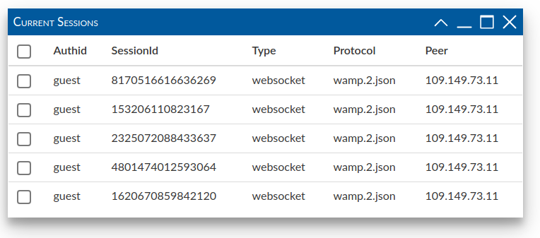
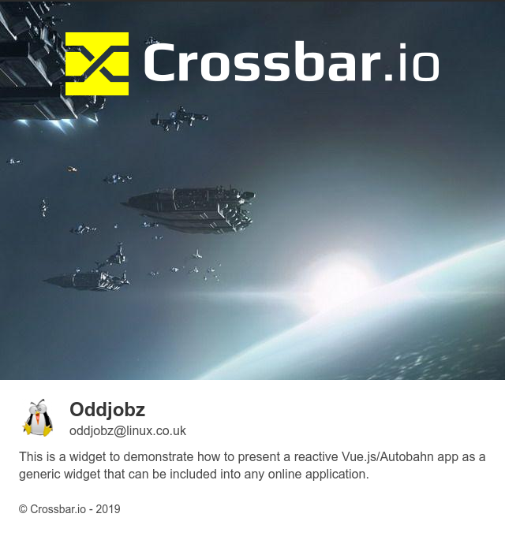

Vue.js Widget

This demonstrates the use of Vue.js Widgets with Autobahn and Crossbar. Click on the Radial menu in the bottom right, then the binoculars, to activate the demo. It should try a connection to a public Crossbar server and show you the connections in a Bulma style reactive table.
Screenshot: sessions table Click on the Coffee Mug for the About / Spashscreen
The Widget is produced in such a way that it's deployed via one .CSS file, one .JS file, then instantiated via a custom HTML tag. Try viewing the source to this page for details.
For a full write-up / details please see the Blog Entry
Source code is currently available from Oddjobz Gitlab repo
Screenshot: splash screen 